Por fin, hemos creado un
proyecto Java IntelliJ básico. Debería ser algo así:
Para ello, escoge File > New > Module From Existing
Sources...:

Ahora selecciona el proyecto OpenXava dentro de la carpeta
workspace en la distribución de OpenXava:

Fíjate, escogemos OpenXava dentro de workspace-6.3/workspace.
Pulsa en OK.
En el siguiente diálogo selecciona Import module from external
model > Eclipse:
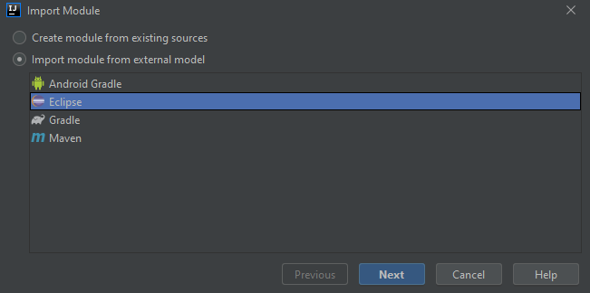
Y pulsa en Next. Esto te llevará al siguiente diálogo:
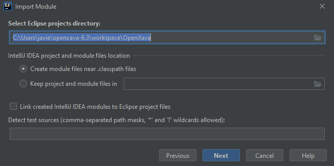
Donde has de pulsar en Next sin tocar nada.
En el siguiente paso desmarca OpenXavaTemplate y OpenXavaPlantilla,
dejando sólo OpenXava, así:
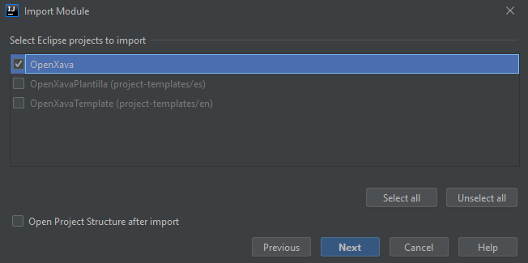
Pulsa en Next. En el siguiente diálogo sobre el estilo de
código:
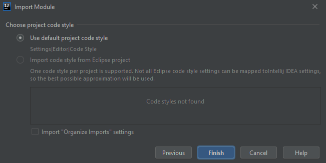
Pulsa en Finish.
Para ello, escoge File > New > Module From Existing
Sources...:
Ahora selecciona el proyecto Addons dentro de la carpeta
workspace en tu distribución de OpenXava:

Te habrás dado cuenta de que es el mismo procedimiento que usamos para
importar OpenXava, así que sí pulsa en OK, después en Next,
Next, Next and Finish, aceptando todos los valores por
defecto.
Finalmente, tienes un proyecto con tres módulos, Addons, OpenXava
y Payroll:
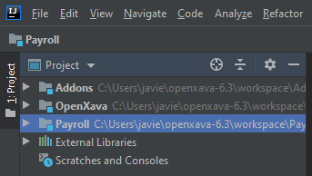
No te preocupes, lo volveremos a añadir enseguida. Pulsa con el botón
derecho del ratón en el módulo Payroll, y selecciona Remove
Module:
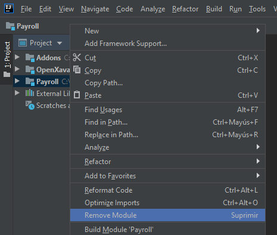
IntelliJ te preguntará por confirmación:

Pulsa en Remove, sin miedo.
Busca CreateNewProject.xml en la raíz del módulo OpenXava, y
pulsa en él con el botón derecho del ratón. Selecciona la opción Add
as Ant Build File:

Se mostrará una vista Ant en la derecha. Allí escoge CreateNewProject
y pulsa el botón Run (el botón con el botón verde de play).
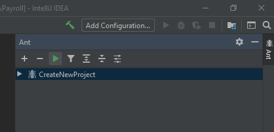
Te preguntará por el nombre del proyecto, teclea Payroll, y
pulsa en OK.

Espera hasta que el mensaje "Ant Build Progress" desaparezca:
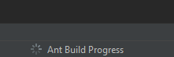
Vamos a importar el recién creado proyecto Payroll como un
módulo. Escoge File > New > Module From Existing Sources...:
Ahora selecciona el proyecto Payroll dentro de la carpeta
workspace de tu distribución de OpenXava:
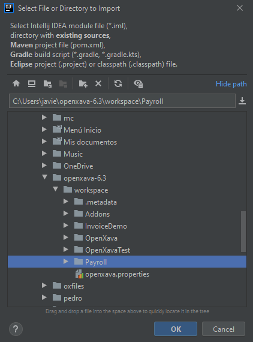
Como ya habrás adivinado es el mismo procedimiento usado para importar
OpenXava y Addons, así que pulsar en OK, Next,
Next, Next y Finish, aceptando todos los valores por
defecto. Antes de crear el módulo IntelliJ te preguntará la última
cuestión:

Pulsa en No y por fin tendrás tu proyecto con tres módulos de
nuevo, Addons, OpenXava y Nomina:
Por fin, el gran momento. Abre Payroll > src > _run, y
allí pulsa en _Run_Payroll con el botón derecho del ratón.
Después escoge Run '_Run_Payroll.main()'.
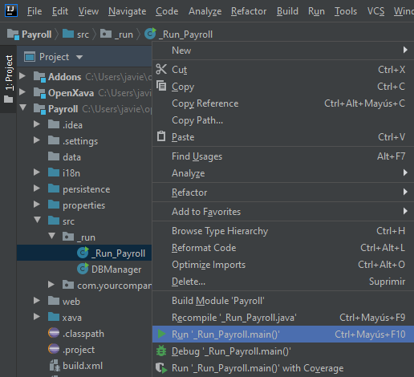
Sé paciente, la primera vez se tiene que compilar todo. Entonces
obtendrás por consola:
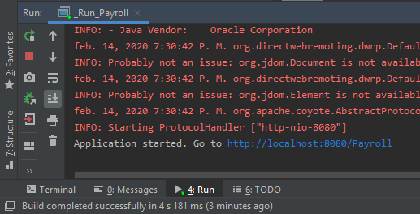
Pulsa en el vínculo http://localhost:8080/Nomina
y prueba tu aplicación. ¡Enhorabuena! Tu nueva aplicación OpenXava está
funcionando en IntellJ. Ahora puedes modificar tu código, añadiendo una
nueva entidad por ejemplo, y reiniciar tu aplicación para ver los
cambios.
Si ya tienes un proyecto OpenXava funcionando con Eclipse y quieres
migrarlo a IntelliJ sigue los pasos que siguen.
En IntelliJ escoge File > New > Project from Existing
Sources...:

Ahora escoge tu proyecto dentro del workspace de Eclipse, para este
tutorial vamos a importar InvoiceDemo, incluido por defecto con
OpenXava:

En el siguiente diálogo selecciona Import project from external
model > Eclipse, posiblemente la opción por defecto:
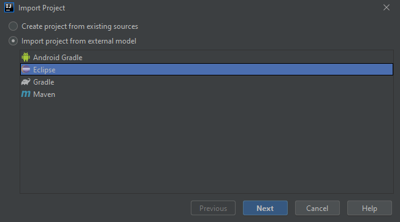
Y pulsa en Next. Esto te lleva al siguiente diálogo:
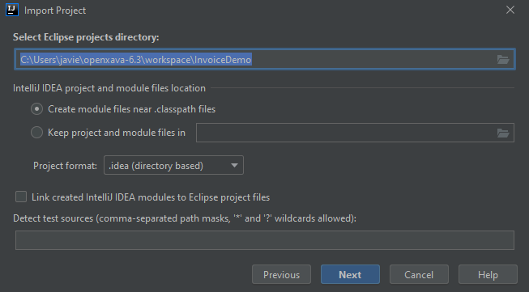
Donde tienes que pulsar Next sin tocar nada. Esto te lleva al
siguiente diálogo:

Pulsa en Next. En el siguiente diálogo sobre el estilo de
código:

Pulsa Next sin tocar nada. Ahora has de escoger el JDK:
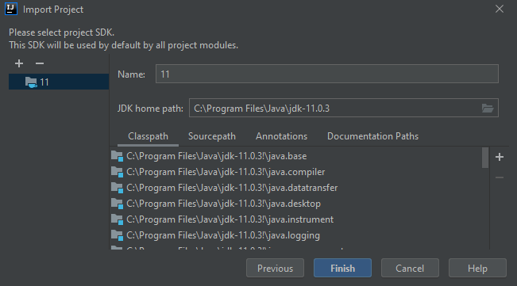
Acepta los valores por defecto pulsando en Finish. Ahora
IntelliJ se enfaca por algo relacionado con modulos desconocidos:

Ni caso, pulsa en OK, para que te haga una pregunta más:

Pulsa en el botón This Window para finalmente tener tu proyecto
importado:

Para eso, escoge File > New > Module From Existing Sources...:
Ahora selecciona el proyecto OpenXava dentro de la carpeta
workspace de tu distribución OpenXava:
Fíjate, escogemos OpenXava dentro de workspace-6.3/workspace.
Pulsa en OK.
En el siguiente diálogo selecciona Import module from external
model > Eclipse:
Y pulsa en Next. Esto te lleva al siguiente diálogo:
Donde has de pulsar en Next sin tocar nada.
En el siguiente paso desmarca OpenXavaTemplate y OpenXavaPlantilla,
dejando sólo OpenXava, así:
Pulsa en Next. En el siguiente diálogo sobre el estilo de
código:
Simplemente pulsa en Finish.
Para ello, escoge File > New > Module From Existing
Sources...:
Ahora selecciona el proyecto Addons dentro de la carpeta
workspace en tu distribución de OpenXava:
Como ya habrás adivinado esto es como importar OpenXava, así
que pulsa en OK, Next, Next, Next y Finish,
aceptando todos los valores por defecto.
Por fin tienes tu proyecto con tres módulos, Addons, OpenXava y
InvoiceDemo:

Abre InvoiceDemo > src > _run, y ahí pulsa en _Run_InvoiceDemo
con el botón derecho del ratón. Entonces escoge Run
'_Run_Payroll.main()'.

Sé paciente, la primera vez tiene que compilarlo todo. Obtendrás en
consola:

Pulsa en el vínculo http://localhost:8080/InvoiceDemo
y prueba tu aplicación. ¡Enhorabuena! Tu aplicación OpenXava está
funcionando ahora con IntellJ. Ahora puedes modificar tu código,
añadiendo una nueva entidad por ejemplo, y reiniciar tu aplicación para
ver los cambios.